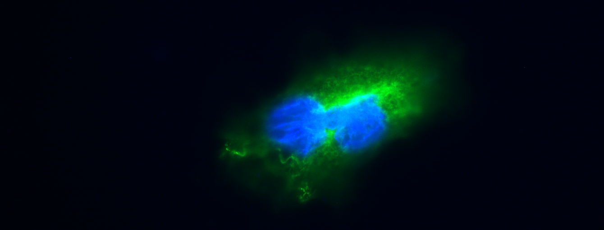
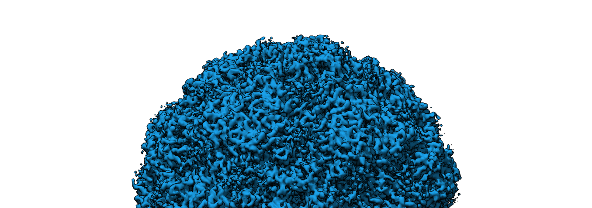
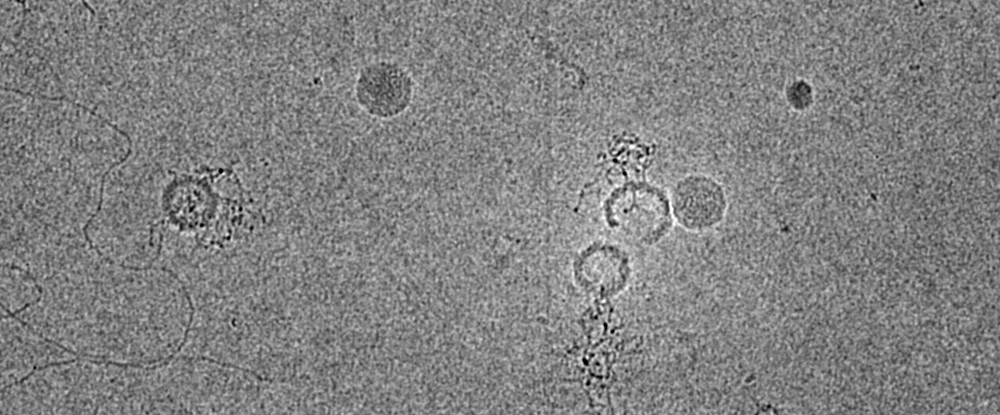

Home
Media
Publications
Contact
CV
  
Simulation from paper
Examining the interplay between face mask usage, asymptomatic transmission, and social distancing on the spread of COVID-19
No social distancing
Your browser does not support the <video> tag.
With social distancing
Your browser does not support the <video> tag.
UCSF Alumni Weekend 2021 Award Ceremony
2021 UCSF Alumni Achievement Awards Show
from
UCSF Foundation
on
Vimeo
.
UCSF Student Life during the COVID-19 Pandemic